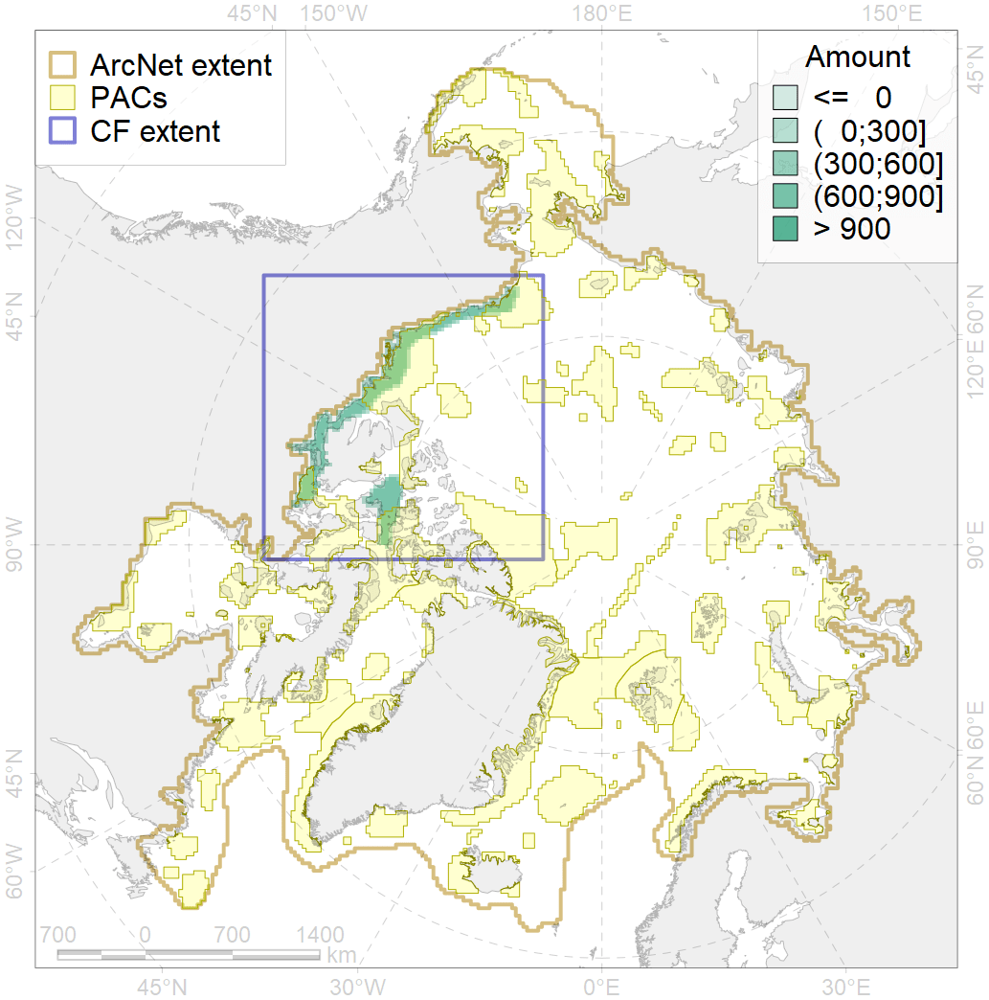
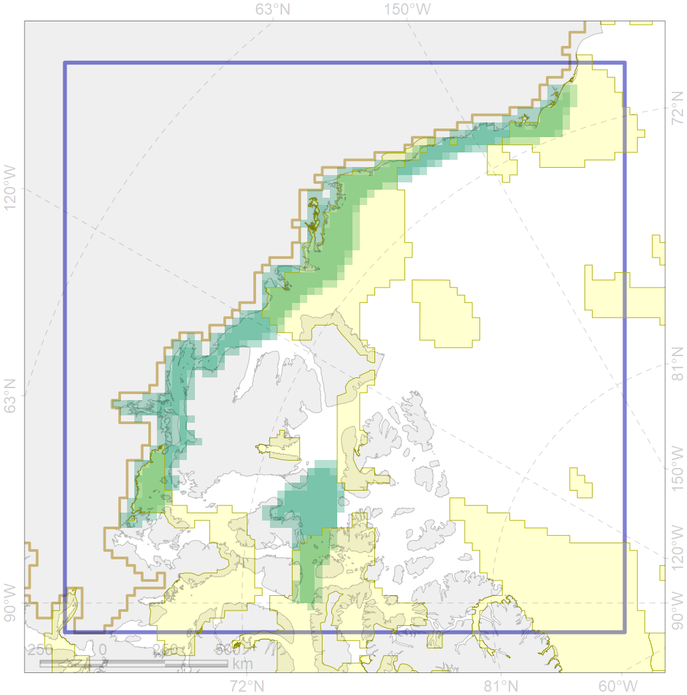

4009

| CF ID | 4009 |
| CF Name | Feeding / nursery area of the Arctic Cisco (Coregonus autumnalis), American populations |
| Time Period | 1940s-2010s |
| Source(s) | Chernova, 2011; Coad Reist 2018 |
| Seasonality | January-December |
| Depth Horizon | coastal waters, lower limits unknown |
| Methodology | Compiled from literature sources based on field observations |
| Author Name | N. Chernova |
| Notes | Chernova (2011) compiled the data of: Scott, Crossman, 1973; Coad, Reist, 2004; Chereshnev, 2008 |
| Conservation Target Set in the Scenario | 0.384 |
| Conservation Target Achieved in the Scenario | 0.522 (Scenario: 135.9%) |
| PAC ID | Proportion in the PAC | Contribution to ArcNet Target Achievement | PAC’s Contribution to the Achieved Target |
|---|---|---|---|
| 52 | 7.4% | 17.7% | 13.0% |
| 60 | 7.4% | 15.8% | 11.6% |
| 61 | 0.3% | 0.7% | 0.5% |
| 62 | 29.5% | 71.3% | 52.5% |
| 65 | 8.0% | 17.4% | 12.8% |
| inner | 52.6% | 122.9% | 90.4% |
| outer | 47.4% | 13.0% | 9.6% |